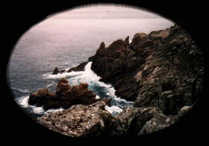

← Table des matières
Le bout du monde

C'est ici que commence cette incroyable histoire...
Vous allez constater que :
La recette est longue et le produit final
n'arrive jamais...
Vous constaterez aussi que certains
secrets
qui jusqu'ici étaient bien cachés
sont exposés dans ces pages très clairement...
Ressentir le départ →
Chapitre I — La mine →
← Retour à la table
Fermer ✕